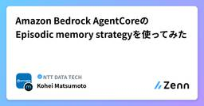
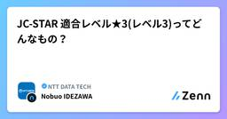
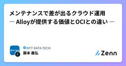
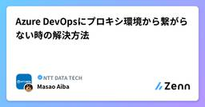
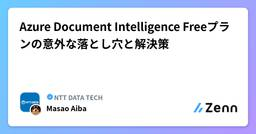
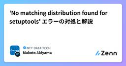
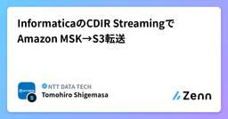
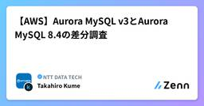
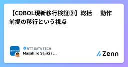

NTT DATA TECHのフィード
https://zenn.dev/p/nttdata_tech
NTT DATA公式アカウントです。 技術を愛するNTT DATAの技術者が、気軽に楽しく発信していきます。 当社のサービスなどについてのお問い合わせは、 お問い合わせフォーム https://nttdata.com/jp/ja/contact-us/ へお願いします。
フィード

Amazon Bedrock AgentCoreのEpisodic memory strategyを使ってみた
NTT DATA TECHのフィード
はじめに株式会社NTTデータグループの松本です。今回は、Amazon Bedrock AgentCoreのMemory機能の一つであるEpisodic memory strategyを実際に使ってみました。2025年12月のAWS re:Invent 2025で発表された一番新しい長期記憶戦略で、Reflectionという機能を持ちます。Reflectionとは、単に何が起こったかを思い出すのではなく、「特定の出来事がなぜ重要なのか」、「それが将来の行動にどのように影響を与えるべきなのか」過去の出来事を要約や分析することで、将来の行動に活用する機能です。本記事では主に以下の...
2日前

JC-STAR 適合レベル★3(レベル3)ってどんなもの？
NTT DATA TECHのフィード
はじめに本記事では、JC-STAR (Japan Cyber-Security Technical Assessment Requirements) において、IPAが先日（2026年2月）公開した ★3（レベル3）適合基準・評価手順（評価手法・評価ガイド） をもとに適合レベル★3の概要をまとめました。 JC-STARとはJC-STAR（Japan Cyber-Security Technical Assessment Requirements）は、経済産業省とIPA（情報処理推進機構）が主導するIoT製品向けのサイバーセキュリティ認証ラベリング制度です。IoTデバイスのセ...
2日前

メンテナンスで差が出るクラウド運用 ― Alloyが提供する価値とOCIとの違い ―
NTT DATA TECHのフィード
メンテナンスで差が出るクラウド運用 ― Alloyが提供する価値とOCIとの違い ―クラウド活用が進む中で、企業の関心は「導入すること」から「安定的に運用し続けること」へとシフトしています。NTTデータでは、これまで多くのお客様のシステム運用に携わる中で、クラウドの価値は単なる性能やコストだけでなく、日々の運用体験によって大きく左右されることを実感してきました。特に「メンテナンス」は、その違いが最も顕著に現れる領域の一つです。本記事では、Oracle Cloud Infrastructure（OCI）をベースとした提供モデルの一つであるAlloyに着目し、Oracle Cl...
3日前

Azure DevOpsにプロキシ環境から繋がらない時の解決方法
NTT DATA TECHのフィード
はじめに社内のネットワーク環境から開発を行う際、避けて通れないのが「プロキシ（Proxy）サーバー」の存在です。セキュリティ対策として必須の仕組みですが、開発ツールとの相性問題に悩まされることも少なくありません。特に、「WebブラウザからはAzure DevOpsの画面が見えているのに、ターミナルから git clone や git pull を実行するとエラーになる」 という現象は、多くのエンジニアが一度は直面する課題ではないでしょうか。本記事では、プロキシ環境下におけるGit接続エラー「fatal: unable to access」が発生する原因と、その具体的な解決手順に...
4日前

Azure Document Intelligence Freeプランの意外な落とし穴と解決策
NTT DATA TECHのフィード
はじめに昨今のデジタルトランスフォーメーション（DX）の流れの中で、紙の書類やPDFファイルをデータ化し、業務効率を上げたいというニーズは高まるばかりです。特に、請求書、契約書、本人確認書類といった非構造化データから、必要な情報を自動で抽出・データ化する技術は、多くの企業で導入が検討されています。マイクロソフトが提供する Azure Document Intelligence（旧：Azure Form Recognizer）は、こうしたニーズに応える強力なAIサービスの一つです。高精度なOCR機能に加え、機械学習モデルを用いて文書の構造（キーと値のペア、表、選択マークなど）を理...
4日前

'No matching distribution found for setuptools' エラーの対処と解説
NTT DATA TECHのフィード
この記事で分かること'No matching distribution found for setuptools' エラーの対処.whl（wheel）と .tar.gz（sdist）の違いなぜ pip download で .tar.gz がダウンロードされるのかオフライン環境でインストールを失敗させないための対策 何が起きたかオンライン環境の venv にインストールされている環境を、オフライン環境の venv でも再現したく以下のことを実行しました。オンライン環境で実行したこと:# requirements.txt に記載されたパッケージをファイルとしてダ...
5日前

InformaticaのCDIR StreamingでAmazon MSK→S3転送
NTT DATA TECHのフィード
1. はじめに本記事では、Informatica（インフォマティカ） のクラウドデータマネジメントプラットフォーム「Intelligent Data Management Cloud」（IDMC ※旧称はIICS）のデータ取り込みソリューションであるCloud Data Ingestion and Replication (CDIR)を用いて、Amazon Managed Streaming for Apache Kafka (MSK)に連携されたデータをSubscribeし、Amazon S3(Simple Storage Service)のバケットへ転送する構成を検証します。...
6日前

【AWS】Aurora MySQL v3とAurora MySQL 8.4の差分調査 1
1
NTT DATA TECHのフィード
1. この記事で書いていることAmazon Web Services（以下AWS）より、2026年5月にAmazon Aurora MySQL 8.4がGAとなったことのリリースがありました。[1]Aurora MySQL v3はMySQL 8.0互換のメジャーバージョンでしたが、Aurora MySQL 8.4は MySQL Community Edition 8.4 LTSをベースにしたメジャーバージョンです。このため、Aurora MySQL v3から8.4への移行は、単なるマイナーバージョンアップではなく、MySQL 8.0 から MySQL 8.4 LTSへの移行と、...
6日前

【COBOL現新移行検証⑨】総括 ─ 動作前提の移行という視点
NTT DATA TECHのフィード
※本記事は、ホスト系COBOL処理系からオープン系COBOL処理系への移行検証を整理する連載の最終回です。 1. シリーズの振り返り本シリーズでは、移行時に発生し得る差異を以下の観点で整理してきました。暗黙初期値データ例外（0C7）ファイル定義中間演算精度移送元と移送先の属性ソート順いずれも共通しているのは、コンパイルは通る文法も正しいしかし動作が変わるという点です。 2. 差異の構造（3層モデル）移行時の差異は、偶発的に発生するものではありません。検証結果を整理すると、次の3層構造に分類できます。層差異の種類具体例本質...
6日前

RSGTセッションレポート「1万人を変え日本を変える！！多層構造型ふりかえりの大規模組織変革」
NTT DATA TECHのフィード
本記事は、下記イベントに対するセッションレポートとなります。イベント名：Regional Scrum Gathering Tokyo 2026日時：2026/01/08登壇者： 森一樹 氏セッション名：1万人を変え日本を変える！！多層構造型ふりかえりの大規模組織変革本記事の筆者は、普段、SM（スクラムマスター）やアジャイルコーチとして、アジャイル開発の支援に携わっています。 セッション内容の紹介本セッションでは、森一樹さんより「多層構造型ふりかえり」という考え方を軸に、大規模組織における変革の進め方について紹介がありました。一般的に、ふりかえりというとチーム単位でのレ...
9日前
AIネイティブコンサルへの挑戦 ～コンサルタントが生産性3倍を狙って直面した品質の壁～
NTT DATA TECHのフィード
1. はじめに本記事は、コンサルタント個人として、AIをコンサルティング実務での成果物作成に組み込もうとするなかで見えてきた、構造的な壁と課題解決に向けた話です。つい先月まで気づいていなかった「バイブコーディング」の威力と、その先で直面した品質の壁。本記事では、その壁を5つの構造的要因に分解し、解決の方向性、そして5世代にわたる構造改修の概観まで示します。※なお、本連載は業務とは別に個人の研究テーマとして取り組んでいる試みの記録です。NTTデータ全社の取り組みとは独立した、私個人の現場ノートとして読んでいただければと思います。 2. 自己紹介テックブログでの投稿は初めて...
10日前
RSGTセッションレポート「アウトプット脳からユーザー価値脳へ」がそんなに簡単にできたら苦労しない
NTT DATA TECHのフィード
本記事は、下記イベントに対するセッションレポートとなります。イベント名：Regional Scrum Gathering Tokyo 2026日時：2026/01/07登壇者： 飯沼 亜紀 氏セッション名：「アウトプット脳からユーザー価値脳へ」がそんなに簡単にできたら苦労しないスライド資料： こちら筆者は普段、開発者としてスクラムチームの支援に関わっています。 セッション内容本セッションでは、売上・予算・納期といった「求められたアウトプット」を中心に考えるアウトプット脳と、ユーザーの行動変化や課題解決といった「価値」を中心に考えるユーザー価値脳という2つの考え方が...
11日前
【Oracle Alloy】プライベートLLMでSelect AIを試す ③：Autonomous Databaseの作成とAI権限の設定
NTT DATA TECHのフィード
はじめに第2回まででサーバーの準備が整いました。今回は、Select AIの心臓部となるAutonomous AI Database (ADB) を構築し、プライベートLLMと通信するための特別な設定を施します。 なぜ「データベース」に設定が必要なのか？Autonomous AI Databaseは通常、非常に高いセキュリティで守られており、外部への通信は厳しく制限されています。今回の構成では、データベースからプライベートサブネットにあるLLMサーバー（Ollama）にリクエストを送る必要があるため、「このユーザーなら、このVCN内のサーバーにHTTPで話しかけてもいいよ」...
11日前
【Oracle Alloy】プライベートLLMでSelect AIを試す ④：Ollamaの起動とSelect AIの実行確認
NTT DATA TECHのフィード
はじめに仕上げとなる今回は、プライベートVMにLLM（Ollama）を実装し、データベースから自然言語でデータを検索する「Select AI」の実行確認をします。 1. Ollama のインストールまずは、プライベートVM内でLLMを動かす準備をします。踏み台サーバー経由でコマンドを実行していきましょう。 Ollama のダウンロードOllama は、LLMサーバで動作させるのですが、LLMサーバはプライベート・サブネットにあるため、インターネットからのダウンロードができません。このため、一旦踏み台サーバにパッケージをダウンロードし、それを LLMサーバに転送する手順が...
11日前
オンプレミスDNSにおけるAWS PrivateLinkを用いたSnowflake への接続設定について
NTT DATA TECHのフィード
1.はじめに 1.1本記事で得られること本記事を読むことで、以下の点を把握できます。オンプレミス環境からAmazon Web Services（AWS） PrivateLink経由でSnowflakeへ接続するための、推奨されるDNS構成。オンプレミスDNS、Route 53 Resolver、Snowflake VPCエンドポイントをどのように連携させるかの具体設定。複数Snowflakeアカウントを利用する場合の設計パターン。 1.2本記事を書こうと思った背景SnowflakeをAWS PrivateLink経由で利用する構成は、セキュリティ要件の観点から多...
11日前
Android Developer Verificationが与えるストア外配信への影響
NTT DATA TECHのフィード
はじめに以前、Androidの開発者を確認するAndroid Developer Verificationという記事で、2026年に、Androidのアプリの提供方法に大きな変更が生じるというお話しをさせていただきました。簡単にまとめますと、Androidにインストールするアプリには、Googleが定める開発者登録が義務付けられるというものでした。昔からAndroidをご存じの方は、サイドローディングが可能という、その自由さを好まれてきた方もいらっしゃるかと思いますが、昨今のセキュリティ事情などを踏まえ、身元確認を行いインストールされるアプリの開発者の身元を特定することになりま...
13日前
RSGTセッションレポート「複雑さを受け入れるか、拒むか？事業成長とともに育ったモノリスを前に私が考えたこと」
NTT DATA TECHのフィード
本記事は、下記イベントに対するセッションレポートとなります。イベント名：Regional Scrum Gathering Tokyo 2026日時：2026/01/07登壇者：Kei Ogane 氏セッション名：複雑さを受け入れるか、拒むか？事業成長とともに育ったモノリスを前に私が考えたこと本記事の筆者は、モバイルアプリ開発エンジニア、アジャイル開発のスクラムマスター、という立場で案件支援業務に主に携わっています。最近は、生成AIを活用した開発プロセスの整備・導入の支援業務も担当しています。このような立場で感じたセッションレポートを、下記に共有いたします。 セッション内...
13日前
Azure BatchにおけるWindows並列処理基盤の最適化
NTT DATA TECHのフィード
はじめにAzure Batchは、数千規模の計算コアを並列稼働させる強力なサービスですが、その真価は「いかに迅速かつ安定して計算環境をデプロイできるか」にかかっています。本記事では、Office文書のPDF変換処理基盤を構築する過程で直面した課題と、それを技術的に解決した全フローを詳細に解説します。 起動時インストール（StartTask）の限界初期検証では、マーケットプレイスの標準OSイメージに対し、ノード起動時にスクリプトを実行してツールを導入する「StartTask」方式を検討しました。しかし、実務上の大きな壁となったのが 「プロビジョニング時間」 です。 プロビジ...
16日前
【Oracle Alloy】プライベートLLMでSelect AIを試す ②：コンピュートインスタンス（踏み台＆LLMサーバ）を作成する
NTT DATA TECHのフィード
はじめに第1回で作成したVCN（仮想ネットワーク）の上に、いよいよサーバ（コンピュートインスタンス）を構築していきます。今回は、役割の異なる2つのインスタンスを作成し、安全にLLMを動かす準備を整えます。 なぜ2台のサーバが必要か？今回の構成では、セキュリティを担保するために役割を「外向き」と「内向き」で分けています。Public-Jump-Server（踏み台サーバ）:パブリックサブネットに配置します。インターネットから唯一アクセスできる窓口となり、ここを経由してLLMサーバの構築やDB操作を行います。Private-Model-Server（LL...
18日前
OSI（Open Semantic Interchange）to Snowflake Converterでセマンティックモデル変換を試す
NTT DATA TECHのフィード
はじめにこんにちは、データエンジニアをしているMaruです。近年、BIやアナリティクスに加えて、AIを活用したデータ分析体験への関心が高まっています。こうした環境では、データそのものだけでなく、指標や用語の意味を一貫して管理するセマンティックレイヤーの重要性も増しています。https://www.nttdata.com/jp/ja/trends/data-insight/2024/0912/一方で、BI・AI・アナリティクスの各ツールは、それぞれ独自のセマンティックモデルを持つことが多く、ツールをまたいだ再利用や統一管理が難しいという課題があります。そうした背景で登場した...
18日前